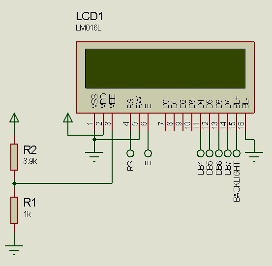

Driver LCD2x16 y LCD4x20
En PIC-C CCS agregamos la librería #include <flex_lcd.c> que hace una función similar a la de un driver en una PC, pero esta vez entre el PIC y la LCD.
Para conocer como se debe conectar el LCD, abriremos la librería “flex_lcd.c”

Descripción de conexiones del LCD

En las primeras líneas podemos ver que se definen los pines del microcontrolador a los cuales irán conectados los pines del LCD, y serán éstos los que usaremos para diseñar nuestro circuito en Proteus ISIS.
En el circuito seleccionamos un PIC18F4550 y un LM016L (pantalla LCD 2x16), como en ejercicios anteriores algunas conexiones no se hacen por simplificar, pero eso no indica que, cuando vamos hacerlo en un Proto-Board no debamos hacerlas. (ej: conexión del pin V0 – contraste del LCD).
Hay que recordar configurar el reloj 20MHz (en la simulación), también colocar en alto el pin 1 del PIC (MCLR).
Comentarios:
- lcd_gotoxy(1,1); nos indica que la próxima instrucción que escriba datos en el LCD los ubicará en la fila 1 columna 1.
- printf(lcd_putc, " escribir aqui "); Este comando es para escribir en la pantalla LCD y escribe lo que está dentro de la comillas.
Extraído parcialmente de: http://22xd.blogspot.com/2011/04/programando-pic-con-ccs-ejercicio-3-lcd.html